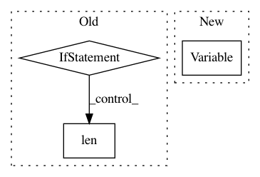

f7a1a77baf9102cbd20971c8edba71c4adad33d6,gpytorch/__init__.py,,monte_carlo_log_likelihood,#Any#Any#Any#Any#Any#,106
Before Change
def monte_carlo_log_likelihood(log_probability_func, train_y,
variational_mean, chol_var_covar,
train_covar):
if isinstance(train_covar, LazyVariable):
log_likelihood = train_covar.monte_carlo_log_likelihood(log_probability_func,
train_y,
variational_mean,
chol_var_covar)
else:
epsilon = Variable(train_covar.data.new(len(train_covar), num_trace_samples).normal_())
samples = chol_var_covar.t().mm(epsilon)
samples = samples + variational_mean.unsqueeze(1)
log_likelihood = log_probability_func(samples, train_y)
return log_likelihood
def mvn_kl_divergence(mean_1, chol_covar_1, mean_2, covar_2):
After Change
Args:
- covar (matrix nxn) - Variable or LazyVariable representing the covariance matrix of the observations.
Usually, this is K + s*I, where s is the noise variance, and K is the prior covariance.
- target (vector n) - Training label vector.
Returns:
- scalar - The marginal log likelihood of the data.
In pattern: SUPERPATTERN
Frequency: 3
Non-data size: 3
Instances
Project Name: cornellius-gp/gpytorch
Commit Name: f7a1a77baf9102cbd20971c8edba71c4adad33d6
Time: 2017-11-05
Author: gpleiss@gmail.com
File Name: gpytorch/__init__.py
Class Name:
Method Name: monte_carlo_log_likelihood
Project Name: cornellius-gp/gpytorch
Commit Name: 38a40828ec688be626e51ebcb1a60a54479fd997
Time: 2017-08-29
Author: ruihan.wu14@gmail.com
File Name: gpytorch/lazy/toeplitz_lazy_variable.py
Class Name: ToeplitzLazyVariable
Method Name: diag
Project Name: brian-team/brian2
Commit Name: e52a4ef94b4a3a0b513debfe02ea2e3cc0e52aa5
Time: 2013-10-02
Author: marcel.stimberg@ens.fr
File Name: brian2/core/variables.py
Class Name: VariableView
Method Name: __setitem__